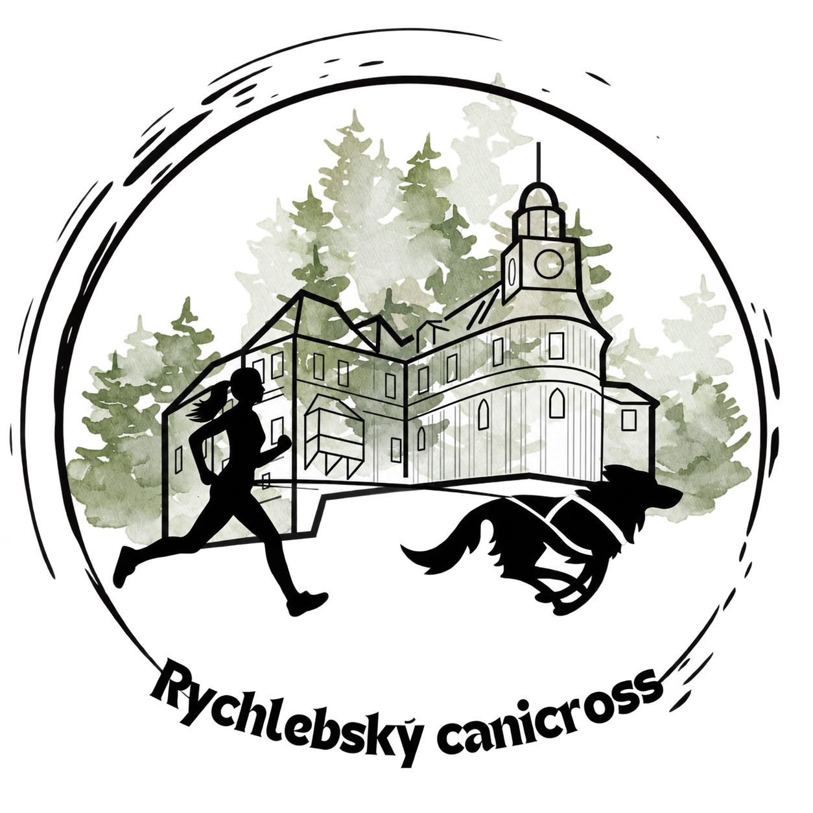

Zveřejnili jsme výsledky
Kompletní výsledky hlavního závodu včetně vítězů všech kategorií najdete přímo tady na webu.
Výsledky závodu →Rychlebský canicross 2026
Na trať 5,2 km se vydalo 25 závodníků se svými psy a na Plyšákcrossu se proběhly i děti se svými plyšáky. Děkujeme, že jste běželi pro ty, kteří domov ještě nemají.

Novinky
Kompletní výsledky hlavního závodu včetně vítězů všech kategorií najdete přímo tady na webu.
Výsledky závodu →Na účet Javornických čumáčků odešla první část výtěžku. Další peníze pošleme po vyúčtování akce a konečnou částku zveřejníme tady.
Co je to za akci
Rychlebský canicross je sportovní a komunitní akce v Javorníku v Rychlebských horách pro všechny, kdo chtějí běžet se psem, užít si závodní atmosféru a podpořit místní útulek.
Běh, ve kterém člověk a pes tvoří jeden tým.
Radost z pohybu, společná výzva a fandění v cíli. Prohlédnout trasu →
Veškerý zisk z akce věnujeme na pomoc opuštěným zvířatům. Javornické čumáčky ↗
Krásné prostředí Javorníku a jeho bezprostředního okolí.
Nejde jen o výkon. Jde o radost z pohybu, spolupráci a společný zážitek.
Pro koho je akce
Pro všechny, kteří mají rádi psy, chtějí zažít běh se svým čtyřnohým parťákem, zasoutěžit si nebo přijít fandit a podpořit dobrou věc.
Základní informace
Další podrobnosti budeme postupně doplňovat. Hlavní údaje ale máte na jednom místě.
Trasa závodu
Trať vede okolím Javorníku po asfaltu, štěrku, polních cestách, loukách a polích.
Praktické informace
Ohlédnutí za ročníkem 2026
Nejrychlejší dvojicí dne byl Michal Verner s Espressem (18:38). Podívejte se na kompletní pořadí všech kategorií a brzy i na fotky a videa z akce.
Registrace na hlavní canicrossový závod
Přihlas sebe a svého psa přes jednoduchý online formulář. Výtěžek ze startovného podpoří místní útulek.
Program dne
Charitativní přesah
Veškerý zisk z akce věnujeme na podporu místního útulku Javornických čumáčků a jejich péče o zvířata v nouzi.
Útulku jsme už poslali 14 500 Kč. Přesnou částku, kterou jsme díky vám a vaší účasti vybrali, zveřejníme zde.
Časté otázky
Závod je otevřený i těm, kteří canicrossový závod poběží poprvé.
Nemusíš. Závod je určený hobby běžcům, začátečníkům i zkušenějším závodníkům.
Nevadí. Důležité je znát svého psa, jeho limity a reakce na cizí prostředí, lidi a ostatní psy. Pes musí být dobře zvládnutelný a majitel k závodu přistupovat zodpovědně.
V den závodu musí být pes starší 12 měsíců.
Ano. Přijďte fandit, užít si atmosféru a podpořit dobrou věc.
Propozice, pravidla, informace o trase a kategoriích zveřejníme na webu v samostatné sekci.
Partneři
Děkujeme všem, kteří pomáhají Rychlebský canicross uskutečnit.
3. října 2026 · Javorník
3. října 2026 · Javorník